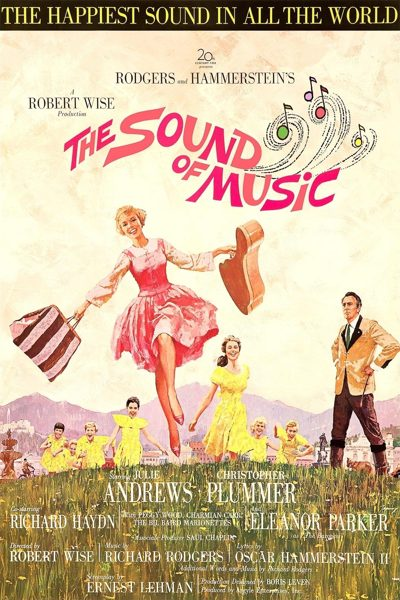

The Sound of Music
Starring: Julie Andrews, Christopher Plummer, Bill Lee
Director: Robert Wise
Writer: Ernest Lehman
Producer: Robert Wise
The Sound of Music is a 1965 American musical drama film produced and directed by Robert Wise from a screenplay written by Ernest Lehman. It is based on the 1959 stage musical composed by Richard Rodgers, with lyrics by Oscar Hammerstein II and a book by Lindsay and Crouse, itself based on the 1949 memoir The Story of the Trapp Family Singers by Maria von Trapp.
Trivia
- Won the Academy Award for Best Picture.
- Won the Academy Award for Best Director.
- Won the Academy Award for Best Film Editing.
- Won the Academy Award for Best Score, Adaptation or Treatment.
- Won the Academy Award for Best Sound.
- Selected for the National Board of Review: Top Ten Films.
- Also nominated for: Academy Award for Best Supporting Actress; Academy Award for Best Actress; Academy Award for Best Cinematography, Color; Academy Award for Best Costume Design, Color; and 1 more.
- Based on The Story of the Trapp Family Singers (1949 memoir by Maria von Trapp).
- Based on The Sound of Music (1959 musical).
- The Sound of Music story is based on Maria von Trapp's memoir The Story of the Trapp Family Singers, published in 1949 to help promote her family's singing group following the death of her husband Georg in 1947.
- Hollywood producers expressed interest in purchasing the title only, but Maria refused, wanting her entire story to be told.
- In 1956, German producer Wolfgang Liebeneiner purchased the film rights for $9,000 (equivalent to $107,000 in 2025), hired George Hurdalek and Herbert Reinecker to write the screenplay, and Franz Grothe to supervise the soundtrack, which consisted of traditional Austrian folk songs.
Filming Locations
- Austria
- Principal photography began on March 26, 1964, at 20th Century-Fox studios in Los Angeles, where scenes were filmed from Maria's bedroom and the abbey cloister and graveyard.
- From April 25 through May 22, scenes were filmed at the Felsenreitschule, Nonnberg Abbey, Mirabell Palace Gardens, Residence Fountain, and various street locations throughout the Altstadt (Old Town) area of the city.
- Rainy days were a constant challenge for the company, so Wise arranged for scenes to be shot at St. Margarethen Chapel and Dürer Studios (Reverend Mother's office).
Previous Showings
5 Runs • 4 Festivals
All runs on record (5):
- January 28 - 30, 2000Winter 2000
- January 13 - 15, 2006Winter 2006
- January 20 - 22, 2006Winter 2006
- November 6 - 8, 2015Rodgers and Hammerstein
- September 17 - 18, 2016Summer 2016